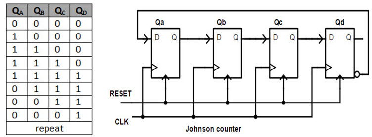

Ring Counter
The Johnson counter is a modification of ring counter.
In this the inverted output of the last stage flip flop is connected to the input of first flip flop.
If we use n flip flops to design the Johnson counter,
it is known as 2n bit Johnson counter or Mod 2n Johnson counter.
This is an advantage of the Johnson counter that it
requires only half number of flip flops that of a ring counter uses, to design the same Mod.
